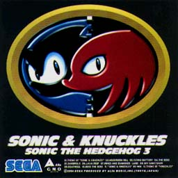
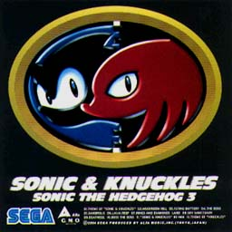

SONIC & KNUCKLES
SONIC THE HEDGEHOG 3


SONIC & KNUCKLES
SONIC THE HEDGEHOG 3

|
発売元：アルファミュージック株式会社 |
|
プロジェクト内では"SONIC 3A"と"SONIC 3B"と呼ばれていた"SONIC3"と"SONIC & KNUCKLES"。 |
|
01. Theme of "SONIC & KNUCKLES" 02. Mushroom Hill 03. Flying Battery 04. The Boss 05. Sandpolis 06. Lava Reef 07. Rings And Diamond Land 08. Sky Sanctuary 09. Deathegg 10. Boss The Boss 11. "SONIC & KNUCKLES" Re-Mix 12. Theme of "KNUCKLES" |
|
・次の作品を見てみたいっす!! ・関連CD＜国内編＞のページへ ・Music CDのページへ ・Sound Web Siteのトップページへ |